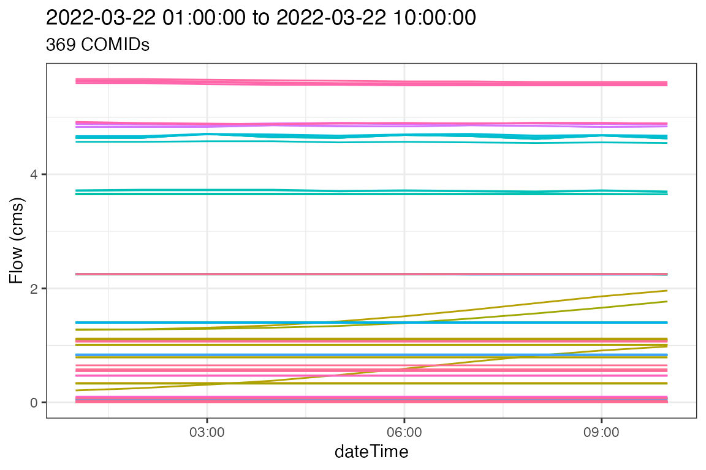

These are some basic examples illustrating how to work with operational NWM streamflow forecasts. The nature of the NWM means that each hour of data is stored in a separate file. To evaluate streamflow for a COMID, or set of COMIDs, through time, a number of of steps are needed which include:
Here we identify the most current forecasts available on NOMADs with get_nomads_filelist, and then proceed to download them to a temporary directory with download_nomads. Specifically we are looking at the 4th ensemble member of the medium range configuration and we limit the data to the first 20 timesteps.
urls <- get_nomads_filelist(type = "medium_range", num = 20, ensemble = 4)
glimpse(urls)
in_files <- download_nomads(urls, dir = tempdir())
glimpse(in_files) After downloading files, we want to merge them into a single file. nwmTools offers a number of ways to do this. The preferred way is if you have NCO install, otherwise there is a RNetCDF variant available. There is also an option to pivot the resulting NetCDF (only available with NCO), such that the data is time eries oriented.
These three options are highlighted below:
nco_pivot <- tempfile(fileext = ".nc")
nco_nopivot <- tempfile(fileext = ".nc")
r_nopivot <- tempfile(fileext = ".nc")
# Use NCO and pivot (default)
system.time({ create_nwm_nc(fileList = in_files, dstfile = nco_pivot, purge = FALSE) })
#> user system elapsed
#> 12.845 6.345 21.416
# Use NCO but do not pivot
system.time({ create_nwm_nc(fileList = in_files, dstfile = nco_nopivot, pivot = FALSE, purge = FALSE) })
#> user system elapsed
#> 12.393 5.351 18.989
# Use RNetCDF
system.time({ create_nwm_nc(fileList = in_files, dstfile = r_nopivot, nco = FALSE, purge = FALSE) })
#> user system elapsed
#> 6.780 0.767 7.699Lets look at the size of the resulting files?
So what does it mean to have a pivoted file?
All NetCDF variables are defined by dimensions. In our case streamflow is a 2D variable defined by the number of time steps (time dimension), and the number of COMIDs (feature_id dimension). Subsets of streamflow can be extracted from this 2D matrix by defining intervals along these dimensions. The order in which the data will be returned is with the last dimension varying fastest. So, if we want to optimize our files for time series access the dimension order should be [feature_id, time], if we want them optimized for space-based query the the dimension order should be [time, feature_id]
First lets looks at the dimensions in the NetCDF files (they are the same across all three variants.)
ncmeta::nc_dims(nco_pivot)
#> # A tibble: 2 × 4
#> id name length unlim
#> <int> <chr> <dbl> <lgl>
#> 1 0 feature_id 2776738 TRUE
#> 2 1 time 20 FALSE
ncmeta::nc_dims(nco_nopivot)
#> # A tibble: 2 × 4
#> id name length unlim
#> <int> <chr> <dbl> <lgl>
#> 1 0 feature_id 2776738 FALSE
#> 2 1 time 20 TRUE
ncmeta::nc_dims(r_nopivot)
#> # A tibble: 2 × 4
#> id name length unlim
#> <int> <chr> <dbl> <lgl>
#> 1 0 feature_id 2776738 FALSE
#> 2 1 time 20 TRUENote that feature_id is the 0 dimension, and time is the 1 dimension where the value is simply the ID. We also note that we have the ~2.7 million reaches over 20 time slices. To see how or pivoted/non-pivoted files are structured we can look at the grids.
ncmeta::nc_grids(nco_pivot)
#> # A tibble: 3 × 4
#> grid ndims variables nvars
#> <chr> <int> <list> <int>
#> 1 D1,D0 2 <tibble [1 × 1]> 1
#> 2 D0 1 <tibble [1 × 1]> 1
#> 3 D1 1 <tibble [1 × 1]> 1
ncmeta::nc_grids(nco_nopivot)
#> # A tibble: 3 × 4
#> grid ndims variables nvars
#> <chr> <int> <list> <int>
#> 1 D0,D1 2 <tibble [1 × 1]> 1
#> 2 D0 1 <tibble [1 × 1]> 1
#> 3 D1 1 <tibble [1 × 1]> 1
ncmeta::nc_grids(r_nopivot)
#> # A tibble: 3 × 4
#> grid ndims variables nvars
#> <chr> <int> <list> <int>
#> 1 D0,D1 2 <tibble [1 × 1]> 1
#> 2 D0 1 <tibble [1 × 1]> 1
#> 3 D1 1 <tibble [1 × 1]> 1So, the NCO pivot file is structured [D0,D1] or [feature_id, time], while the non-pivoted files are stored [D1,D0] or [time, feature_id]. So in addition to the decreased file size, the pivoting also sets up the nco_pivot file for faster data extraction.
Now the fun part! Getting data out of these files.
Since our resulting NetCDF can be formatted differently depending on method used, and subsetting is a repetitive task prone to error, nwmTools offers a extract_nwm function that works from a file and set of COMID(s). For example, lets extract the time series from all three files for COMID-102900.
system.time({ Q1 <- extract_nwm(nco_pivot, comids = 102900) })
#> user system elapsed
#> 0.042 0.019 0.066
system.time({ Q2 <- extract_nwm(nco_nopivot, comids = 102900) })
#> user system elapsed
#> 0.037 0.020 0.058
system.time({ Q3 <- extract_nwm(r_nopivot, comids = 102900) })
#> user system elapsed
#> 0.053 0.006 0.059
# Are they all the same?
identical(Q1$values, Q2$values)
#> [1] TRUE
identical(Q1$values, Q3$values)
#> [1] TRUE
plot(Q1$dateTime, Q1$values, ylab = "Flow (cms)", xlab = "DateTime")The same process can be employed for a set of COMIDs
# Get 1000 random COMIDs...
test = sample(var.get.nc(open.nc(nco_pivot), "feature_id"), 1000)
system.time({ Q4 <- extract_nwm(nco_pivot, comids = test) })
#> user system elapsed
#> 1.394 0.132 1.659
system.time({ Q5 <- extract_nwm(nco_nopivot, comids = test) })
#> user system elapsed
#> 1.775 0.105 1.906
system.time({ Q6 <- extract_nwm(r_nopivot, comids = test) })
#> user system elapsed
#> 2.939 0.171 3.187
identical(Q4$values, Q5$values)
#> [1] TRUE
identical(Q4$values, Q6$values)
#> [1] TRUELets put this all together in an example that (1) defines an area, (2) identifies the needed COMIDs, (3) downloads a sets of forecast files, (4) formats them and (5) extracts the needed time series. Here, we use a shortcut in create_nwm_nc in which the definition of files and the download are defined as parameters rather then passed as a set of files.
# Define and area, get NHDflowlines, and isolate the COMID
AOI = get_nhdplus(aoi_get("Fort Collins"))$comid
# Define, download, format, purge, extract!
system.time({
nwm = create_nwm_nc(type = "medium_range",
num = 10,
ensemble = 2,
dstfile = tempfile(fileext = ".nc"),
purge = TRUE,
quiet = TRUE)
forecast = extract_nwm(nwm, comids = AOI)
})
#> user system elapsed
#> 7.330 4.300 15.119So what do the flows in Boulder look like in the forcasted future?
ggplot(data = forecast,
aes(x = dateTime, y = values, color = as.factor(comid))) +
geom_line() +
theme_bw() +
labs(y = "Flow (cms)",
title = paste(range(forecast$dateTime), collapse = " to "),
subtitle = paste(length(unique(forecast$comid)), "COMIDs")) +
theme(legend.position = "none")